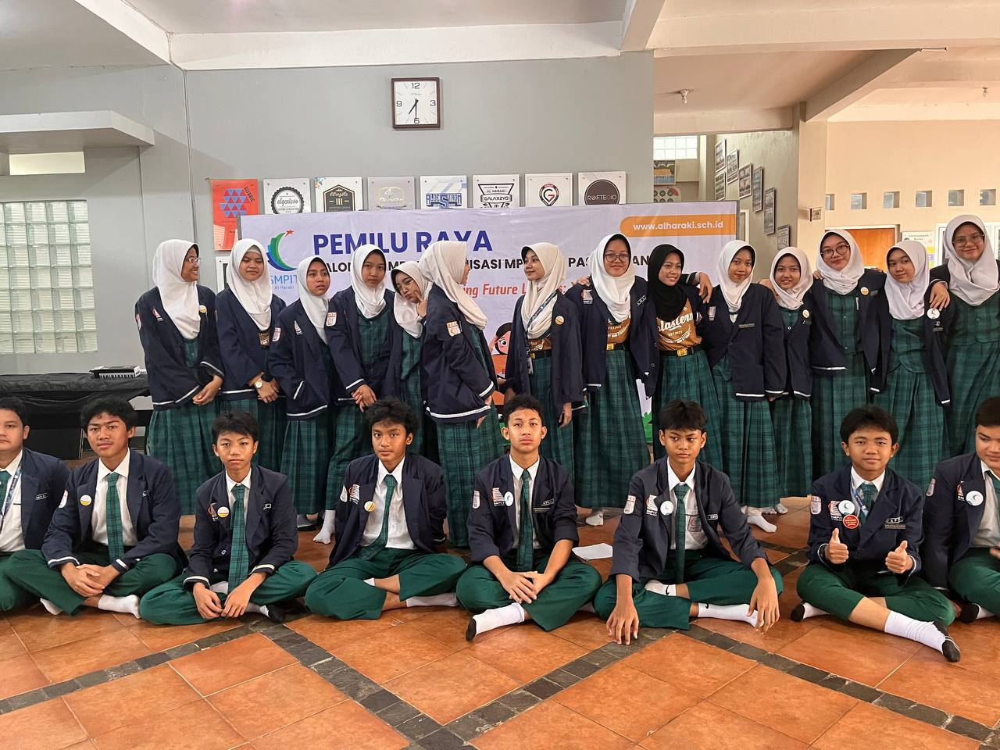
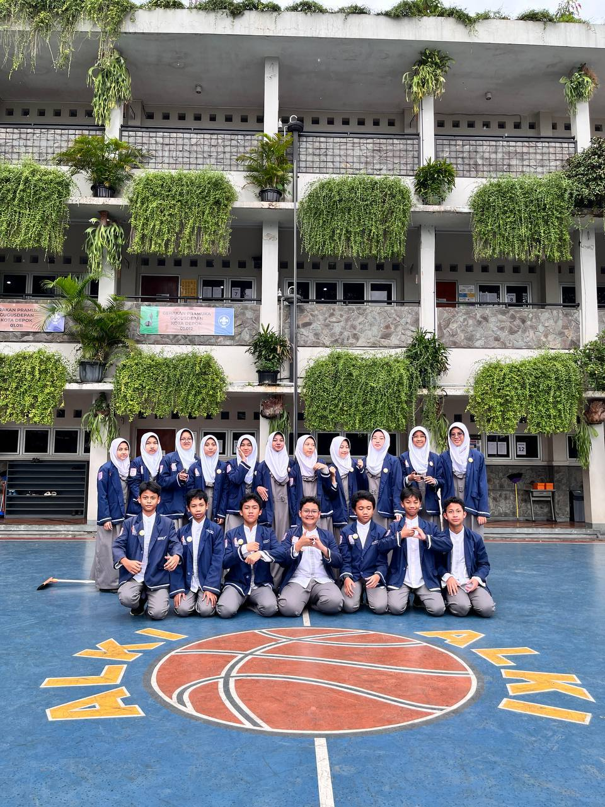
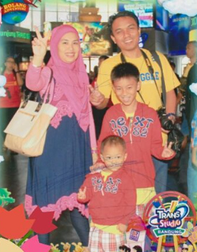
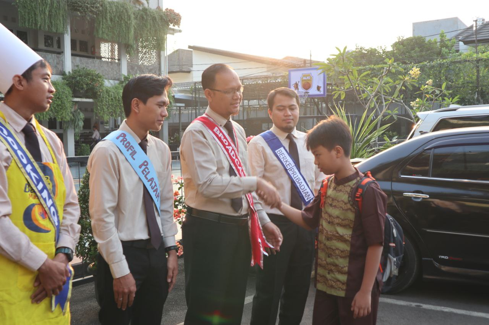

Karya Nyata dari Proses Belajar
Website ini merupakan media pendukung untuk menampilkan hasil Ujian Praktik Terintegrasi.
Website ini merupakan portofolio digital yang berisi hasil karya dan pembelajaran selama Ujian Praktik Terintegrasi.
Tujuan pembuatan website ini adalah untuk melatih kemampuan HTML dan menampilkan karya secara digital.
Saya membahas Internship Curriculum bidang Broadcasting untuk digunakan sebagai teks argumentasi.
Saya berharap agar argumen atau saran yang saya sampaikan dapat membantu program IC Broadcasting berkembang untuk kedepannya.
Alhamdulillah saya dapat menyelesaikan teks argumentasi walaupun dengan banyaknya jadwal yang bertabrakan juga dengan video yang belum selesai.



